CRVI000189Unknown - Nope
Reaction GIF cut from TMZ footage · Rihanna leaving a club · 49 frames, 3.9s loop · 2014
Reaction GIF cut from TMZ footage · Rihanna leaving a club · 49 frames, 3.9s loop · 2014
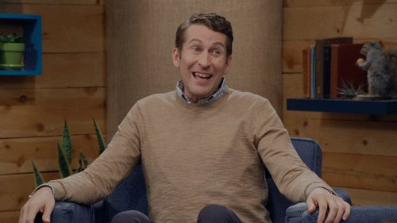
CRVI000190Unknown - Shrug
Reaction GIF · Comedy Bang! Bang! · 27 frames, 2.7s loop
Reaction GIF · Comedy Bang! Bang! · 27 frames, 2.7s loop

CRVI000191Unknown - Confused
Reaction GIF · Winona Ryder at the 2017 SAG Awards · 67 frames, 4.5s loop · 2017
Reaction GIF · Winona Ryder at the 2017 SAG Awards · 67 frames, 4.5s loop · 2017
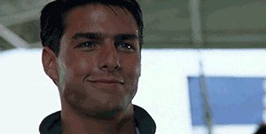
CRVI000192Unknown - Aviators
Reaction GIF · Tom Cruise putting on aviators · 55 frames, 2.2s loop
Reaction GIF · Tom Cruise putting on aviators · 55 frames, 2.2s loop
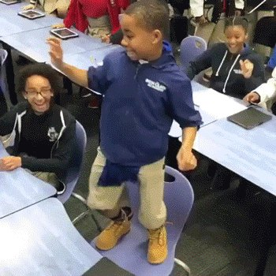
CRVI000193Unknown - Dancing
Reaction GIF · 60 frames, 3.6s loop
Reaction GIF · 60 frames, 3.6s loop

CRVI000194Unknown - Dunno
Reaction GIF · 50 frames, 3.5s loop
Reaction GIF · 50 frames, 3.5s loop
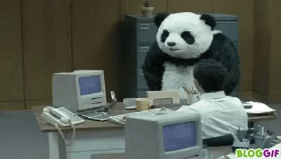
CRVI000195Unknown - Desk Flip
Reaction GIF · Panda in an office · 43 frames, 5.2s loop
Reaction GIF · Panda in an office · 43 frames, 5.2s loop

CRVI000196Unknown - Hello
Reaction GIF · 40 frames, 2.8s loop
Reaction GIF · 40 frames, 2.8s loop
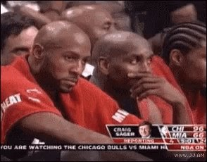
CRVI000197Unknown - Hmm
Reaction GIF · Alonzo Mourning courtside · 42 frames, 4.2s loop
Reaction GIF · Alonzo Mourning courtside · 42 frames, 4.2s loop

CRVI000198Unknown - Nope
Reaction GIF · 77 frames, 3.9s loop
Reaction GIF · 77 frames, 3.9s loop
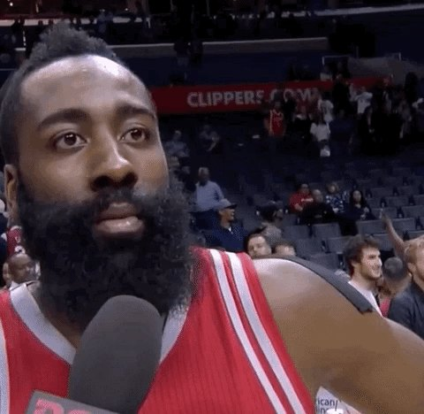
CRVI000199Unknown - Nope
Reaction GIF · James Harden · 29 frames, 1.7s loop
Reaction GIF · James Harden · 29 frames, 1.7s loop

CRVI000200Unknown - Nope
Reaction GIF · Prince · 22 frames, 1.5s loop
Reaction GIF · Prince · 22 frames, 1.5s loop

CRVI000201Unknown - Ohhhhh
Reaction GIF · 54 frames, 2.2s loop
Reaction GIF · 54 frames, 2.2s loop
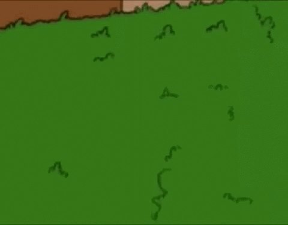
CRVI000202Unknown - Oh No
Reaction GIF · Abraham Simpson, The Simpsons · 51 frames, 5.1s loop
Reaction GIF · Abraham Simpson, The Simpsons · 51 frames, 5.1s loop

CRVI000203Unknown - Popcorn
Reaction GIF · 60 frames, 6.0s loop
Reaction GIF · 60 frames, 6.0s loop
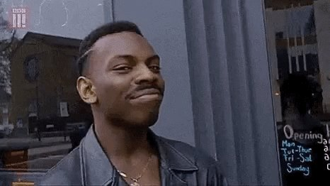
CRVI000204Unknown - Roll Safe
Reaction GIF · Kayode Ewumi as Reece Simpson · 21 frames, 1.1s loop · 2016
Reaction GIF · Kayode Ewumi as Reece Simpson · 21 frames, 1.1s loop · 2016

CRVI000205Unknown - Time
Reaction GIF · Matthew McConaughey as Rust Cohle · 31 frames, 3.1s loop
Reaction GIF · Matthew McConaughey as Rust Cohle · 31 frames, 3.1s loop

CRVI000206Unknown - Uhhh
Reaction GIF · 46 frames, 4.6s loop
Reaction GIF · 46 frames, 4.6s loop
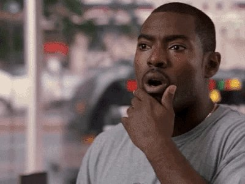
CRVI000207Unknown - Wait, What
Reaction GIF · 81 frames, 3.2s loop
Reaction GIF · 81 frames, 3.2s loop

CRVI000208Unknown - Whoa
Reaction GIF · Chris Farley · 32 frames, 1.4s loop
Reaction GIF · Chris Farley · 32 frames, 1.4s loop

CRVI000209Unknown - First Pitch
Reaction GIF · Sister Mary Jo Sobieck · 170 frames, 5.1s loop · 2018
Reaction GIF · Sister Mary Jo Sobieck · 170 frames, 5.1s loop · 2018
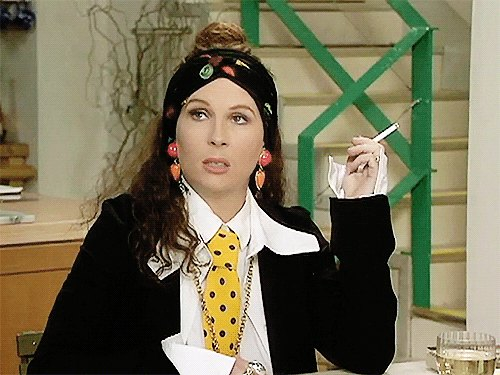
CRVI000210Unknown - Confused
Reaction GIF · Jennifer Saunders as Edina Monsoon · 20 frames, 1.3s loop
Reaction GIF · Jennifer Saunders as Edina Monsoon · 20 frames, 1.3s loop
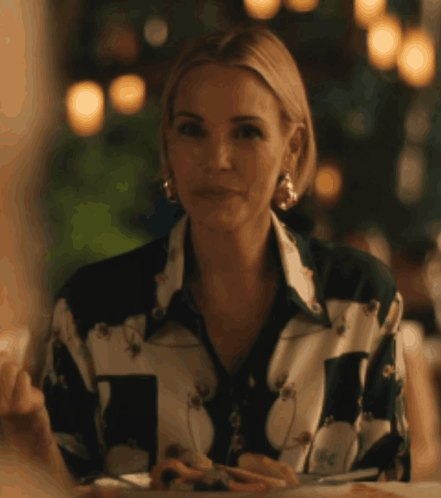
CRVI000211Unknown - Nonverbal Yes
Reaction GIF · Leslie Bibb as Kate, The White Lotus · 39 frames, 3.9s loop · 2025
Reaction GIF · Leslie Bibb as Kate, The White Lotus · 39 frames, 3.9s loop · 2025

CRVI000212Unknown - Dance Break
Reaction GIF · Saturday Night Live · 58 frames, 4.6s loop
Reaction GIF · Saturday Night Live · 58 frames, 4.6s loop
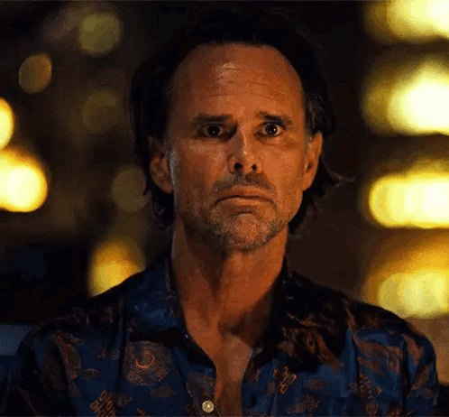
CRVI000213Unknown - Stare
Reaction GIF · Walton Goggins as Rick Hatchett, The White Lotus · 72 frames, 3.6s loop · 2025
Reaction GIF · Walton Goggins as Rick Hatchett, The White Lotus · 72 frames, 3.6s loop · 2025
CRVI000214Unknown - Victoria
Reaction GIF · Parker Posey as Victoria Ratliff, The White Lotus · 117 frames, 3.9s loop · 2025
Reaction GIF · Parker Posey as Victoria Ratliff, The White Lotus · 117 frames, 3.9s loop · 2025